| student | grade |
|---|---|
| Smith, Emily | MGMT1001, 92 (A+); MGMT2605, 86 (A); MGMT5450, 84 (A-) |
| Johnson, Michael | MGMT1001, 77 (B+); MGMT2605, 100 (A+); MGMT5450, 74 (B) |
| Brown, Olivia | MGMT1001, 86 (A); MGMT2605, 70 (B-); MGMT5450, 99 (A+) |
11 Quantitative data analysis
By the end of this chapter, you will be able to:
- Tidy data principles
- Separating and merging columns
- Pivoting and unpivoting columns
- Combining datasets
- Understand what categorical data is and how to identify it in a dataset.
- Understand the difference between nominal categorical data and ordinal categorical data.
- Understand the concepts of distribution, frequency (count), and relative frequency (proportion), and how to represent them using tables.
- Know how to transform raw textual data into categorical data.
- Calculate measures of central tendency
- Calculate measures of dispersion
- Use these measures to summarize numerical data.
- Choose an appropriate visualization method for different types of variables.
- Visualize multiple variables in Excel.
- Format visualizations effectively.
- Logistic regression
- Linear regression
Disclaimer
This chapter has a lot more content than previous ones. Indeed, it draws from 5 weeks of an undergraduate “working with data” course, as well as 2 weeks from the “Introduction to Data Science” course. While I may reorganize the content and divide it again in a few chapters in the future, the goal was to cover, in one chapter for now, the entire quantitative data analysis process, so that this may constitute a useful resource for you now and in the future. I have divided in in 4 core parts:
- Processing the data
- Analyzing/summarizing the data
- Visualizing the data
- Logistic and linear regression (to predict the values of a dichotomous or numerical variable based on multiple other variables).
11.1 Processing data
Data is stored in all kinds of places, can be accessed in many different ways, and comes in all shapes and forms. Therefore, much of the researcher’s work can sometimes be related to the processing and cleaning of the data to get it ready for analysis. Here are a few principles to structure data in a tabular format (e.g., an Excel spreadsheet) in a way that maximizes the data usability:
- Each column represents a single variable.
- Each cell contains a single value.
- Each row contains a single observation.
In some circles, data that follows these principles is called tidy data.
11.1.1 Splitting columns
Let’s take a look at a dataset that is not tidy. You can download the dataset here to practice following the steps below. There is also a video walkthrough with additional explanations at the end of the section.
We can see that for each course, students are listed in a single cell, and their grades as well. To make this data tidy, a first thing we might might to do is separate each grade observation into its own row. We have nine grades in total in the set, so we would expect nine rows in total.
First you will want to open the Power Query Editor by selecting all of the data and clicking on Data then From Table/Range.
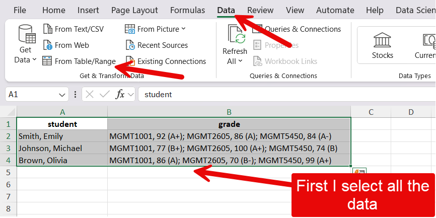
Then I check the my table has headers, because it does.
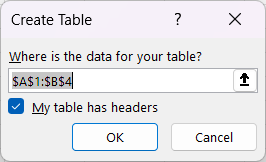
This will open the Power Query Editor
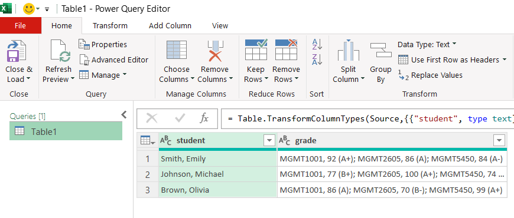
Then follow these steps to transform your data:
- Select the grade column.
- In the Transform menu, click on Split columns.
- Select the delimiter. In this case, choose custom and then comma followed by a space:
; - Click on Advanced options.
- Select Split into Rows.
When you are done with your transformations in the Power Query Editor. You close it by clicking the Close & Load button.
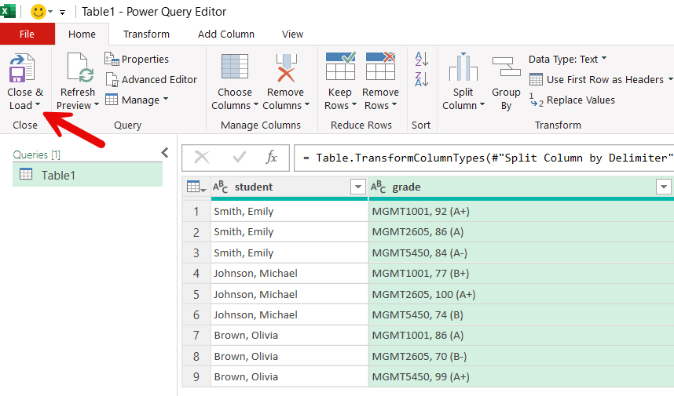
| student | grade |
|---|---|
| Smith, Emily | MGMT1001, 92 (A+) |
| Smith, Emily | MGMT2605, 86 (A) |
| Smith, Emily | MGMT5450, 84 (A-) |
| Johnson, Michael | MGMT1001, 77 (B+) |
| Johnson, Michael | MGMT2605, 100 (A+) |
| Johnson, Michael | MGMT5450, 74 (B) |
| Brown, Olivia | MGMT1001, 86 (A) |
| Brown, Olivia | MGMT2605, 70 (B-) |
| Brown, Olivia | MGMT5450, 99 (A+) |
We made some progress, but now we need to separate the course code from the grades following these steps in the Power Query Editor:
- Select the grade column.
- In the Transform menu, click on Split columns.
- Select the delimiter. In this case, choose custom and then comma followed by a space:
, - Click on Advanced options.
- Select Split into Columns.
The result should look like this:
| student | course_code | grade |
|---|---|---|
| Smith, Emily | MGMT1001 | 92 (A+) |
| Smith, Emily | MGMT2605 | 86 (A) |
| Smith, Emily | MGMT5450 | 84 (A-) |
| Johnson, Michael | MGMT1001 | 77 (B+) |
| Johnson, Michael | MGMT2605 | 100 (A+) |
| Johnson, Michael | MGMT5450 | 74 (B) |
| Brown, Olivia | MGMT1001 | 86 (A) |
| Brown, Olivia | MGMT2605 | 70 (B-) |
| Brown, Olivia | MGMT5450 | 99 (A+) |
This is starting to look great, although we still have the issue of the numeric and letter grades being lumped together in a cell. To make this data truly tidy, we want to separate the numeric and the letter grades, following these steps in the Power Query Editor:
- Select the grade column.
- In the Transform menu, click on Split columns.
- Select the delimiter. In this case, choose space.
- Click on Advanced options.
- Select Split into Columns.
- Give an appropriate name to your new columns by double clicking on the current names.
| student | course_code | grade_numeric | grade_letter |
|---|---|---|---|
| Smith, Emily | MGMT1001 | 92 | (A+) |
| Smith, Emily | MGMT2605 | 86 | (A) |
| Smith, Emily | MGMT5450 | 84 | (A-) |
| Johnson, Michael | MGMT1001 | 77 | (B+) |
| Johnson, Michael | MGMT2605 | 100 | (A+) |
| Johnson, Michael | MGMT5450 | 74 | (B) |
| Brown, Olivia | MGMT1001 | 86 | (A) |
| Brown, Olivia | MGMT2605 | 70 | (B-) |
| Brown, Olivia | MGMT5450 | 99 | (A+) |
In this case, our letter grades are written in between parentheses, so we can remove the parentheses using the following steps:
- Select the column containing the letter grades
- Right click, select Replace values…
- Replace ( by nothing.
- Repeat step 1 and 2.
- Replace ) by nothing.
Your result should look like this:
| student | course_code | grade_numeric | grade_letter |
|---|---|---|---|
| Smith, Emily | MGMT1001 | 92 | A+ |
| Smith, Emily | MGMT2605 | 86 | A |
| Smith, Emily | MGMT5450 | 84 | A- |
| Johnson, Michael | MGMT1001 | 77 | B+ |
| Johnson, Michael | MGMT2605 | 100 | A+ |
| Johnson, Michael | MGMT5450 | 74 | B |
| Brown, Olivia | MGMT1001 | 86 | A |
| Brown, Olivia | MGMT2605 | 70 | B- |
| Brown, Olivia | MGMT5450 | 99 | A+ |
Finally, click on close and load in the home menu of the Power Query Editor. That’s it, now we have a tidy data set of grades!
11.1.1.1 Video walkthrough
11.1.2 Pivot and unpivot columns
For some reason, you may encounter datasets in matrix form where a group of columns are in fact different observations of a same variable (in this case, three course codes). You can download the example dataset here, which we use in the steps below. Again you will also find a video demo with more explanations at the end of the section.
The dataset looks like this:
| student | MGMT1001 | MGMT2605 | MGMT5450 |
|---|---|---|---|
| Smith, Emily | 92 | 86 | 84 |
| Johnson, Michael | 77 | 100 | 74 |
| Brown, Olivia | 86 | 70 | 99 |
Unpivot columns
The unpivot functions can be used to create a new variable (a new column) for which the values will be the three course codes. This can be done in just a few clicks:
- Select the three columns that have course codes as headers.
- In the Transform menu, click on Unpivot columns.
- Double click on the new attributes column to rename it to course_code.
- Double click on the new values column to rename it to grade,
The resulting table should look like this:
| student | course_code | grade |
|---|---|---|
| Smith, Emily | MGMT1001 | 92 |
| Smith, Emily | MGMT2605 | 86 |
| Smith, Emily | MGMT5450 | 84 |
| Johnson, Michael | MGMT1001 | 77 |
| Johnson, Michael | MGMT2605 | 100 |
| Johnson, Michael | MGMT5450 | 74 |
| Brown, Olivia | MGMT1001 | 86 |
| Brown, Olivia | MGMT2605 | 70 |
| Brown, Olivia | MGMT5450 | 99 |
That’s it, we’ve made the dataset tidy again!
pivot a column
If, for some reason, one wished to do the opposite operation and create multiple columns containing each possible value of a variable. This can be done with (you guessed it) the pivot function in the Power Query Editor.
- Select the column to pivot.
- In the Transform menu, click on pivot column.
- Select which column contains the values for the new columns (the grade column in this case)
- Under Avanced options, select Don’t aggregate.
The resulting table should look like the original dataset:
| student | MGMT1001 | MGMT2605 | MGMT5450 |
|---|---|---|---|
| Smith, Emily | 92 | 86 | 84 |
| Johnson, Michael | 77 | 100 | 74 |
| Brown, Olivia | 86 | 70 | 99 |
Video demo
11.1.3 Combining datasets
Caution
The steps decribed below for combining datasets are not done in the Power Query Editor like most of the transformation above. You need to perform these operations directly in your Excel spreadsheet.
Sometimes the data will come in separate files so you will have to combine the pieces into a single and tidy dataset. If your two datasets contains parts of the same observations in the same order, you may be able to simply copy and paste columns from one dataset into the other. Similarly, if the two datasets have the same columns, you may be able to copy and paste rows from one dataset into the other. However, life is not always that easy, and sometimes you need to look up information about a particular entry in your dataset in another dataset with a different structure. Take the following two tables, for example.
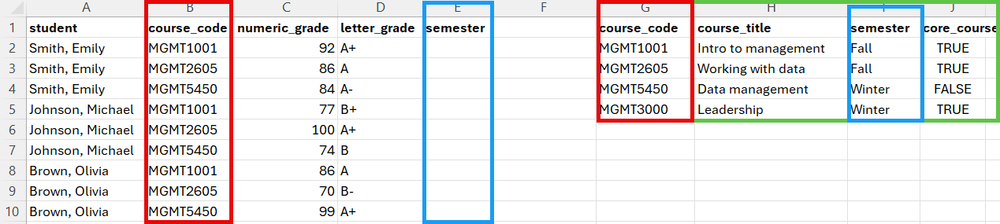
We have on the one hand a table of grades that students received in three different courses, and on the other end a table of course details. If we want to determine, for example, the average grade in Fall or Winter semester course, we need to bring these columns into the grades dataset. In the section below, you will learn how to use the VLOOKUP function to perform this task.
The VLOOKUP() function
The VLOOPKUP() function can be used to combine the columns of two datasets that do not necessarily share the same structure. It looks like this:
=VLOOKUP(lookup_value, table_array, column, col_index_num, [range_lookup])
The lookup value can be a single value, like “MGMT1001” or the coordinates of a cell that contains the value like B2.
The table array is the group of rows and columns (the range) in which you want to look for the lookup value. In the example above, the range would be A2:E5, A2 being the upper left corner of the range (we don’t need to include the column names), and E5 the bottom right corner of the range. However, you should always make sure that every element of your range coordinates is preceded with a dollar sign, like this: $G$2:$J$5 This fixes the range to ensure that it is not automatically modified when you copy and paste your formula to look up different values.
The column index number is the number of the column in the table array that contain the values you want to bring into the other dataset. For example, in the range above, the value I’m interested in is the third column of the range, so 3 is the value I need to include in this part of the formula.
The range lookup can take two values: TRUE or FALSE. For the purpose of this course, you should always use FALSE. TRUE is used when you want to determine whether the lookup value falls within a range of values in the table array (e.g., look up if 92 is between 90 and 100 and is a A+).
Putting it all together, what we get =VLOOKUP(B2,$G$2:$J$5,3,FALSE).
We need to select the cell where we want the semester information to be added, and then insert or formula in the cell or in the box above.
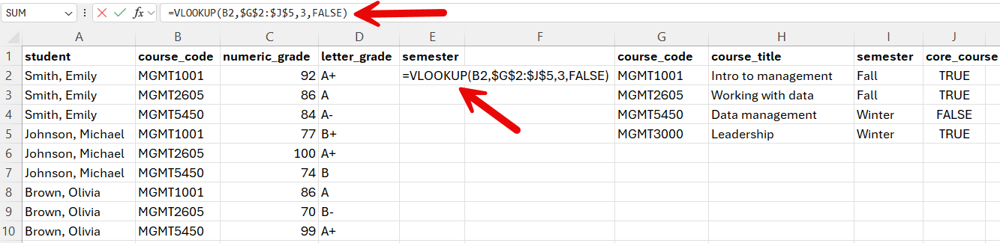
The result should be:
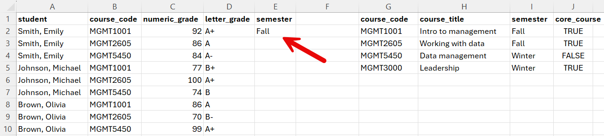
And then we double click the bottom right corner of the cell to copy the formula over the entire column, or just copy and paste it, which gives us the following result:
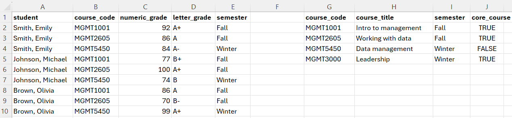
The following video demonstrates how to use VLOOKUP() function using the same example we just when through.
Beware of complex relationships in the data
The examples we went through went relatively smoothly because our grade data did not contain complex relationships. Data will often complex relationships (e.g. a course taught by two instructors) or, which require special attention if we don’t want to produce valid results when we analyze the data. The following video demonstrates how this can be an issue.
The important thing to remember here is that you will often have to construct multiple tables from the same data in order to answer different questions.
Exercise
In Brightspace, under content and then data, you will find a dataset of publications authored by Dalhousie researchers, from 2023. The following four challenges will allow you to practice the skills that you have now learned:
- Prepare a table with the top 15 most frequent topics covered in the dataset. Topics are separated by a semi-colon (do not further split keywords in their subparts using the comma as a delimiter).
- Prepare a table with the top 10 authors in the dataset with the highest number of publications and paste it below. The names should be in the last name, first name format and must not include the author ID (the number in parentheses included after each name). Hint: When removing the author ID, remember that you can split columns only at the first or last instance of the chosen delimiter. There’s also an easy way to remove the author IDs using the Find and replace function outside the Power Query Editor.
- Prepare a table with the top 10 countries, other than Canada, with the largest publications in the dataset. Beware of the fact that a publication can be co-authored by multiple authors with affiliations in the same country. You only want to count the country once for each paper. For example, if a paper was co-authored by researchers at Dal (Canada), Harvard (US) and Berkeley (US), we want this paper to count as one paper from the US (not two). This means that you will need to keep only relevant columns in your table and remove duplicates before you create your pivot table.
- Prepare a table with the number of publications by discipline, ranked from the discipline with the most to the discipline with the least. You will notice that the discipline column of the Dal 2023 publications table is empty. You will need to look at the journal in the sheet of the Excel file named “Journal Classification” to obtain the discipline of each paper.
11.2 Analyzing data
11.2.1 Analyzing categorical data
Categorical variables are groups or categories that can be nominal or ordinal.
Nominal data
Nominal variables represent categories or groups between which there is no logical or hierarchical relationship.
Ordinal data
Ordinal variables represent categories or groups that have a logical order. They are often used to transform numerical variables.
Categories represented with numbers
It is important to look at your data to understand what the values represent. Sometimes you may have groups that are represented with numbers. When deciding what type of statistical analysis is adequate for a given variable, you most likely will want to consider treating those variables as categorical and not numerical..
Example: Titanic passengers dataset
The following examples and videos are using a simplified version (available here) of the titanic dataset (available here). This is what our practice dataset looks like:
| pclass | survived | name | sex | age | age.group | ticket | fare | cabin | embarked |
|---|---|---|---|---|---|---|---|---|---|
| 1 | 1 | Appleton, Mrs. Edward Dale (Charlotte Lamson) | female | 53 | 36 to 59 | 11769 | 51.4792 | C101 | Southampton |
| 1 | 0 | Artagaveytia, Mr. Ramon | male | 71 | 60+ | PC 17609 | 49.5042 | NA | Cherbourg |
| 1 | 0 | Astor, Col. John Jacob | male | 47 | 36 to 59 | PC 17757 | 227.5250 | C62 C64 | Cherbourg |
| 1 | 1 | Astor, Mrs. John Jacob (Madeleine Talmadge Force) | female | 18 | 18 to 35 | PC 17757 | 227.5250 | C62 C64 | Cherbourg |
| 2 | 0 | Lamb, Mr. John Joseph | male | NA | Unknown | 240261 | 10.7083 | NA | Queenstown |
| 2 | 1 | Laroche, Miss. Louise | female | 1 | 0 to 17 | SC/Paris 2123 | 41.5792 | NA | Cherbourg |
| 2 | 1 | Laroche, Miss. Simonne Marie Anne Andree | female | 3 | 0 to 17 | SC/Paris 2123 | 41.5792 | NA | Cherbourg |
| 2 | 0 | Laroche, Mr. Joseph Philippe Lemercier | male | 25 | 18 to 35 | SC/Paris 2123 | 41.5792 | NA | Cherbourg |
| 3 | 0 | Barry, Miss. Julia | female | 27 | 18 to 35 | 330844 | 7.8792 | NA | Queenstown |
| 3 | 0 | Barton, Mr. David John | male | 22 | 18 to 35 | 324669 | 8.0500 | NA | Southampton |
| 3 | 0 | Beavan, Mr. William Thomas | male | 19 | 18 to 35 | 323951 | 8.0500 | NA | Southampton |
Identifying categorical data
In this chapter, we are focusing on categorical data, so the first step is determining which columns in our dataset contain categorical data and what type of categorical data (nominal or ordinal) they are. In the following video, I walk you through this process:
Summarizing categorical data
There is not a lot that you can do with a single categorical variable other than reporting the frequency (count) and relative frequency (percentage) of observations for each category. To do this, we are going to use a tool that we have already learned: pivot tables.
Frequency
A typical tool to analyze categorical data is to count the number of observation that fall into each of the groups.
| embarked | freq |
|---|---|
| Cherbourg | 270 |
| Queenstown | 123 |
| Southampton | 914 |
| NA | 2 |
Relative frequency
The relative frequency is simply the frequency represented as a percentage rather than count. It is obtained by first computing the frequency and then calculating the relative frequency by dividing each count by the total.
| embarked | freq | rel_freq |
|---|---|---|
| Cherbourg | 270 | 0.2062643 |
| Queenstown | 123 | 0.0939649 |
| Southampton | 914 | 0.6982429 |
| NA | 2 | 0.0015279 |
Rounding the values
When we calculate the relative frequency, we obtain numbers with a lot of decimals. We can remove or add decimals by selecting our data and clicking on the or 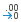 buttons, respectively.
Converting the relative frequency to percentages
Another thing we might want to do is show the relative frequency as a percentage. This can be done by clicking the % button in excel.
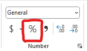
| embarked | freq | rel_freq (%) |
|---|---|---|
| Cherbourg | 270 | 20.6 |
| Queenstown | 123 | 9.4 |
| Southampton | 914 | 69.8 |
| NA | 2 | 0.2 |
Demo
In this video, I show you how to summarize categorical data using the frequency and the relative frequency.
Converting numerical data into categorical data
Just because a column in a dataset does not contain categorical data, doesn’t mean it can’t be transformed into categorical data. For examples, age groups (e.g. 0-17, 18-35, etc.) are groups (categorical) based on age (numerical). Here’s a video showing we can make that transformation in our Titanic dataset.
11.2.2 Analyzing numerical data
While summarizing categorical data is done with frequency and relative frequency tables, numerical data can be summarized using descriptive statistics divided into three groups:
- Measures of central tendency.
- Measures of dispersion.
- Measures of skewness.
In this chapter, we will focus on only the first two: measures of central tendency and measures of dispersion.
Measures of central tendency
Measures of central tendency help you summarize data by looking at the central point within it. While the mode (the value(s) with the highest frequency) is also considered a measure of central tendency, in this chapter we will only consider two: the average (or mean), and the median.
| Statistic | description | formula | Excel function |
|---|---|---|---|
| Average or Mean | The sum of values divided by the number of observations | \[ \overline{X} = \frac{\sum{X}}{n} \] | =AVERAGE(x:x) |
| Median | the middle value of a set of number once sorted in ascending or descending order | If n is odd: \[ M_x = x_\frac{n + 1}{2} \] If n is even: \[ M_x = \frac{x_{(n/2)} + x_{(n/2)+1}}{2} \] |
|
Table 8.1. Measures of central tendency
Demo
In the following video, I explain the how to manually calculate the average and median in a set of numerical data.
Measures of dispersion
| Statistic | Definition | Formula | Excel formula |
|---|---|---|---|
| Variance (Var) | Expected squared deviation from the mean. Measures how far numbers spread around the average | \[ Var = \frac{\sum{(x_i-\overline{x})^2}}{N} \] | =VAR(x:x) |
| Standard deviation (SD) | Square root of the Variance. | \[ SD = \sqrt{\frac{\sum{(x_i-\overline{x})^2}}{N}} \] | =STDEV(x) |
| Range | Difference between the minimum and maximum values in the data. | N/A | Minimum value: Maximum value: Range: |
| Interquartile range (IQR) | The difference between the first quartile (Q1) and the third quartile (Q3). It measures the spread of the middle 50% of the data. | N/A | Q1: Q3: IQR: |
Table 8.2. Measures of dispersion
Demo
In the following video, I explain the how to manually calculate the different measures of dispersion in a set of numerical data.
Creating a descriptive statistics summary
Using the measures of central tendency and dispersion listed above, we can construct a descriptive statistics summary for any number of numerical variables in a dataset. Note that these summaries don’t typically display the interquartile range (IQR) and the range, but instead provide the actual values required to calculate them (i.e., Min, Q1, Q3, Max).
| variable | N | Mean | SD | VAR | Q1 | Median | Q3 | Min | Max |
|---|---|---|---|---|---|---|---|---|---|
| age | 1046 | 29.898 | 14.415 | 207.791 | 21.000 | 28.000 | 39.000 | 0 | 80.000 |
| fare | 1308 | 33.295 | 51.759 | 2678.960 | 7.896 | 14.454 | 31.275 | 0 | 512.329 |
Demo
In the following video, I show you how to create descriptive statistics summary in Excel.
11.2.3 Measuring the relationship between two variables
Two categorical variables
When we want to combine multiple categorical variable to analyze them jointly, we can use a contingency table (aka cross-tabulation or crosstab), which displays the frequency (or relative frequency) distribution two variables. Here’s an example from the Titanic dataset, where we combined the Embark and the Sex columns
| female | male | Sum | |
|---|---|---|---|
| Cherbourg | 113 | 157 | 270 |
| Queenstown | 60 | 63 | 123 |
| Southampton | 291 | 623 | 914 |
| Sum | 464 | 843 | 1307 |
In this table:
- The column represent the categories of one variable (sex: male and female).
- The rows represent the categories of another variable (Embark: Cherbourg, Queenstown, Southampton).
- The cells show the frequency counts of the combinations of these categories.
Demo
A categorical and a numerical variable
As we saw in Chapter 8, numerical data can be summarized using a descriptive statistics summary that includes measures of central tendency and measures of dispersion. To summarize the relationship between a categorical variable and a numerical, we simply have to calculate these measures for each group of the categorical variable. For example, the table belows shows the descriptive statistics summary for the fare variable for each passenger class.
| pclass | N | Mean | SD | VAR | Q1 | Median | Q3 | Min | Max |
|---|---|---|---|---|---|---|---|---|---|
| 1 | 323 | 87.509 | 80.447 | 6471.748 | 30.696 | 60.000 | 107.662 | 0 | 512.329 |
| 2 | 277 | 21.179 | 13.607 | 185.154 | 13.000 | 15.046 | 26.000 | 0 | 73.500 |
| 3 | 708 | 13.303 | 11.494 | 132.120 | 7.750 | 8.050 | 15.246 | 0 | 69.550 |
Demo
Two numerical variables
The relationship between two numerical variable can be captured by a single number called the correlation coefficient. It is calculated using the CORREL(x:x,y:y) function in Excel, where x:x is a column of numerical data, and y:y is another column of numerical data.
Suppose you have the following data:
| A | B |
|---|---|
| 1 | 2 |
| 2 | 4 |
| 3 | 6 |
| 4 | 8 |
| 5 | 10 |
To find the correlation coefficient between columns A and B, you would type =CORREL(A1:A5, B1:B5) in a new cell. The result will be 1, which indicates a perfect positive correlation. 0 would mean that there is no correlation at all (no relationship between the two variables), and -1 would indicate a perfect negative correlation. The closer the value is to 1 or -1, the stronger the linear relationship between the two variables.
Demo
11.3 Visualizing data
If you are interested in a deep dive in data visualization that goes well beyond the scope of this course, I recommend the Fundamentals of Data Visualization book by Claus O. Wilke available here. This specific chapter of the Wilke book will give you some information on how to format tables and figures. Here is a video showing how to paste your tables and figures in Word from your Excel, as well as how to make format them appropriately.
Identifying the data and the purpose of the visualization
Data visualizations can be fun and colorful, but remember that their most important feature is their informativeness, and that not all data can or should be visualized. Often times, not producing a visualization is the best way to go. So, before you start thinking about how to visualize your data, the first thing you will want to do is think about the purpose: What do you want to visualize, and why? Asking yourself these important questions will save you a lot of time and unnecessary suffering down the road, by preventing you from embarking on a journey to fix a problem that is not a problem and that does not need fixing.
Choosing the right visualization method
While there is rarely a single best way to visualize a specific variable, there are usually not so many options that make sense. Your main constraint is the type of data that you are working with, so that is the first question you have to answer before thinking about how it can be visualized. In fact, these are the same questions that you had to ask yourself in Chapter 7 and Chapter 8, where you learned to identify and summarize categorical and numerical data. In the next few sections, we explore the types of visualizations that are recommended for each type of data.
11.3.1 Visualizing a categorical variable
If you are working with a categorical variable, such as the port of embarkation of the Titanic passengers. The first thing you need to do is summarize the data by calculating the frequency (counts) and/or relative frequency (percentages), just like you learned in Chapter 7. Once you have summarized your data, you can think about how to visualize that summary.
11.3.1.1 Visualizing frequencies
The most common and best way to visualize frequencies is the bar chart (or column chart in Excel). Like this one:
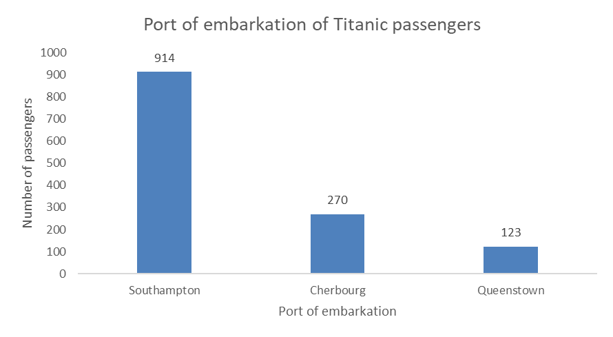
You can also do an horizontal bar chart, like this one:
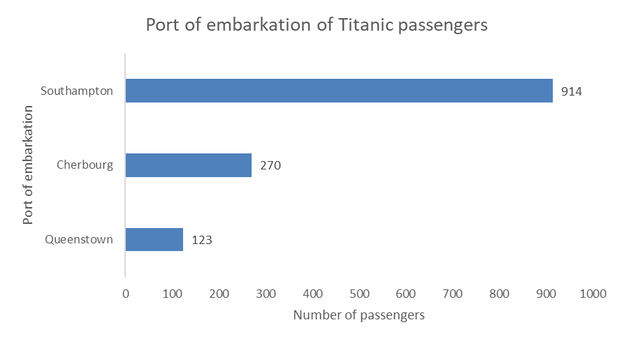
If you are working with a nominal variable then you should order the categories from either highest count to lowest count, or the other way around, as in the examples above. However, if you are working with a ordinal variable (i.e., the categories have a logical order), then you should keep that logical order for your visualization. For example, you would not want to reorder the passenger classes when visualizing the number of passengers in each class, but keep the logical order of the classes, like this:
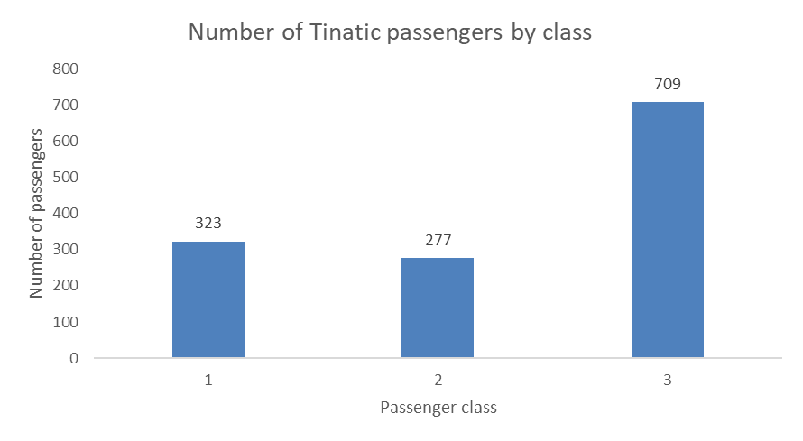
11.3.1.2 Visualizing relative frequencies
You can think of a percentages as a parts of a pie, the whole pie being 100%, so a popular although sometimes criticized way to visualize percentages is the pie chart.
You can also use bar charts (horizontal or vertical) to visualize relative frequencies, like this:
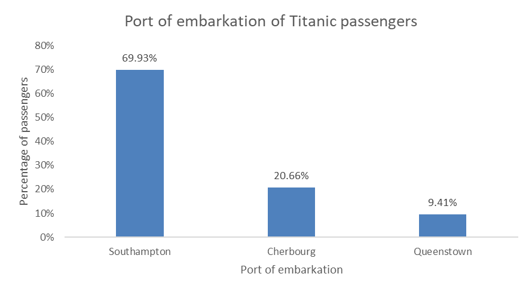
11.3.1.3 Demo: bar charts and pie charts
11.3.2 Visualizing a numerical variable
Histogram
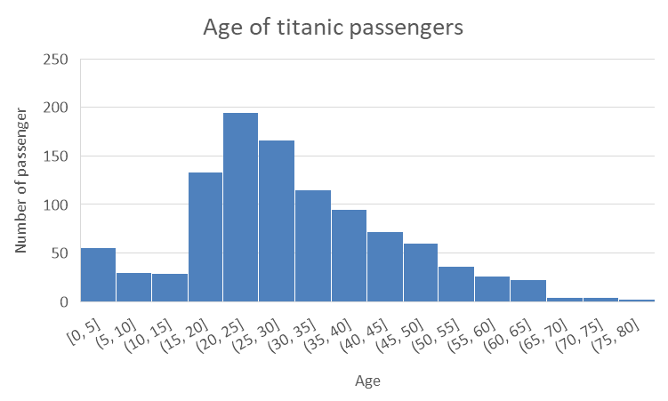
Box plot
The box plot is a visual representation of the descriptive statistics summary that you learned to do in Chapter 8. Here is our summary of the Age variable.
| Variable | N | Mean | SD | Var | Min | Q1 | Median | Q3 | Max |
|---|---|---|---|---|---|---|---|---|---|
| Age | 1046 | 29.9 | 14.4 | 207.8 | 0 | 21 | 28 | 39 | 80 |
The box plot below uses the first quartile (Q1) and the third quartile (Q3) to create a box, with a line inside the box representing the median. The mean is represented by an X, and the whiskers show the range of the data outside the box, and the outliers (extreme values) are show as dots outside of the whiskers. There are different acceptable methods to locate the whiskers, the simplest one is to use the min and the max, other common practices include placing them at 1.5 times the interquartile range (IQR) from the nearest quartile, at one standard deviation above and below the mean, or at the 2nd and 98th percentiles. As I am writing this, I still do not know how Excel determines where to put the whiskers, but it seems close to the 99th percentile and the 1st, this is just a guess at that point as my investigations have not been fruitful.
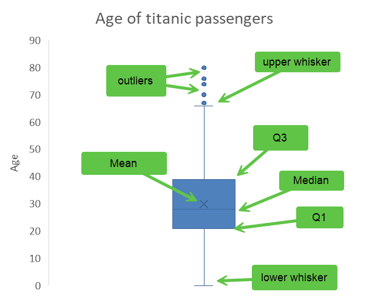
Demo: histograms and box plots
11.3.3 Visualizing multiple variables
Just like in the previous chapter, the choices available to you for visualizing the relationship between two or more variables are are strictly determined by the type of data your are working with. Basically, there are three possible combinations
Two or more categorical variables
Two or more numerical variables
A combination of categorical and numerical variables
Here we treat timelines as a case of their own, so that would make four different possibilities.
The section below provides examples of visualizations and at the end of the chapter you will find a series of video demonstration how to produce these graphs in Excel.
11.3.4 Two categorical variables
When you have two categorical variables, the process is very similar as for single categorical variables. We need to create a contigency table, as we have learned in Chapter 7, and then we have a series of choices available to us.
Side-by-side bars
The side-by-side bars have the benefit of being very clear and allow us to display the data label (this should be avoided, however, when there are two many bars and the numbers start getting to close to each other or overlapping. However, side-by-side bars can be less space efficient than stacked bars (see below) when dealing with categories with many groups.
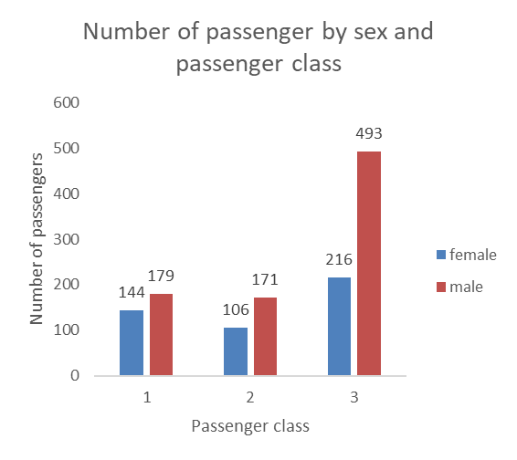
Stacked bars
Stacking the bars can a nice option also. These graphs are more space efficient, but the data labels can be harder to read. The labels can also get crowded and start overlapping when categories have small number of observations.
One issue with stacked bars when we do not use data labels is that it becomes difficult to see which differences between the size of two bars that are on top of the others (in this case the difference between male passengers in the first and second classes would be hard to see if the number was not included).
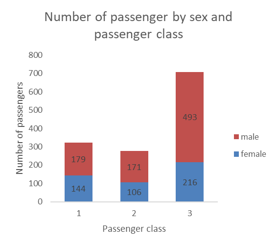
100% stacked bars
100% stacked bars actually allow you to reshape the bars by shaping them based on percentages, while still allowing you to show the count as the data label (unless you are working with aggregated data already in the form of percentages, then the data label would also show percentages).
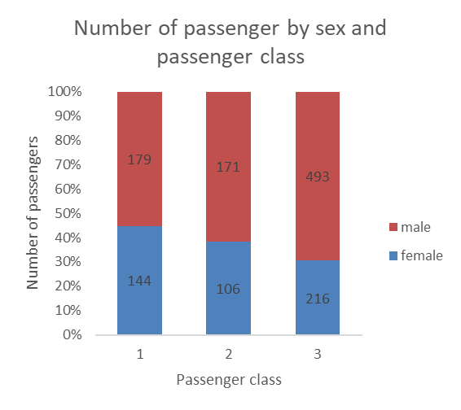
Adding a third variable
Sometimes, you may wish to add a third categorical variable in the mix. This is possible, as in the example below showing, for each passenger class, the number of passenger of each sex that survived or died.
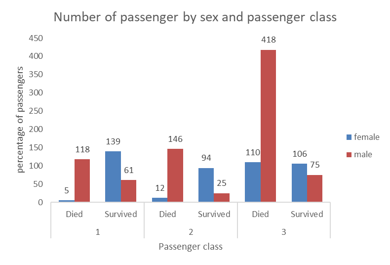
Here again, we can use stacked bars, however we can see that in some cases the numbers are small and overlap with the axes and are a bit harder to read. This is still a nice way to visualize the relationship between the three categorical variables (sex, survived, and passenger class).
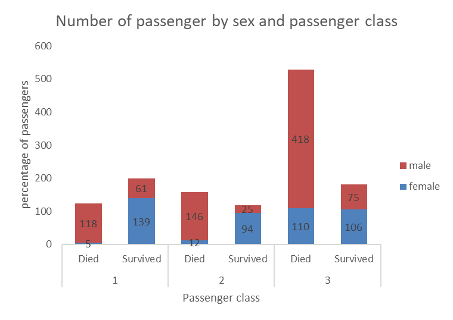
Demo
11.3.5 Two numerical variables
Scatterplot
The go to graph when dealing with two numerical variables is the scatterplot, which displays each observation as a dot on the graph situated at coordinates determined by the two numerical variables. In the example below, we plotted the relationship between age and ticket fare. We also added a linear trend line and the R2 to help determine the direction and strength of the relationship between the two. Since the red line has a positive slope (it goes up as age and ticket fare increase, we can quickly see that the relationship is positive, and the low R2 value of 0.0318 tells confirms that the relationship is not strong. This is generally teh case when the dots do not seem to follow a regular pattern and are scattered all over and away from the trend line.
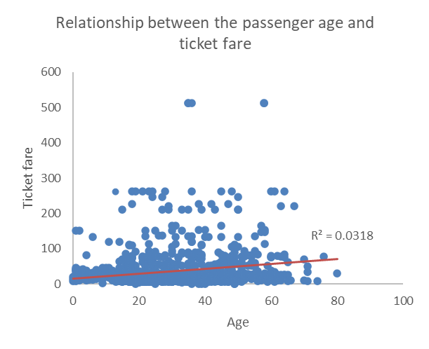
Demo
11.3.6 A numerical and a categorical variables
When dealing with a numerical and a categorical variables, we have two choices… we can produce a panel of histograms (one for each possible value of the categorical variable) or make a graph with multiple box plots (one for each value of the categorical variable).
The example below show a panel of three histograms (one for each passenger class) with the age distribution of Titanic passengers. This works pretty well, although it’s hard to see if there is a difference between the distribution for the second and third class. Another issue is that if that if we are working with a categorical variable with a lot of possible values, the amount of space needed to visualize each distribution may quickly become an issue.
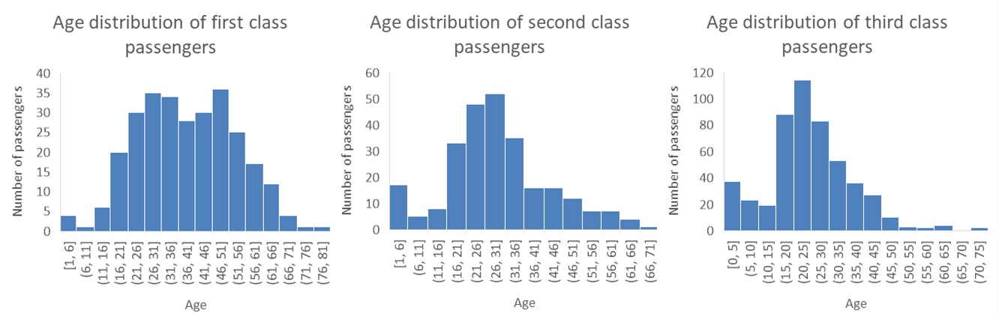
Demo
Box plots series
The two problems with histogram panels (the amount of space they take and the challenge in seeing differences) make the series of box plots an interesting alternative. As you can see, the example below is much more space efficient, and we can clearly see that the third class passengers tend to be younger then the second class passengers, who tend to be significantly younger than first class passengers. While they may not be the most popular visualization methods, box plots are a very clear and efficient way of visualizing distributions of a numerical variable for different groups.
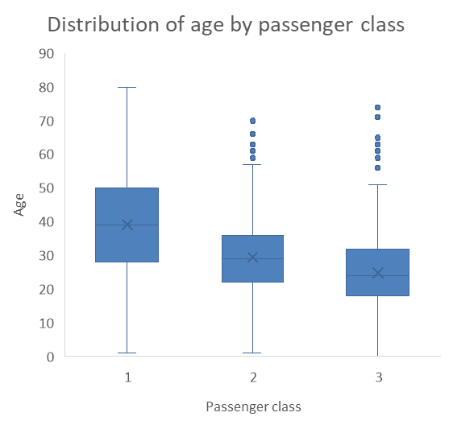
Demo
11.3.7 Timelines
Finally, line graphs are preferred when one of the variable is a temporal unit (a date, a year, a day, etc.). In the example below, we observe the trend of the number of publications in the Canadian Journal of Administrative Sciences over four decades.
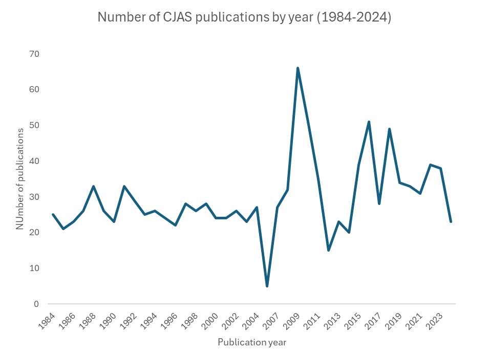
We can add multiple trends to in the same graph too. For example, the graph below shows the average number of institutions and countries listed on the publications in the journals, which indicate an increase in interinstitutional and international collaboration in the field over time.
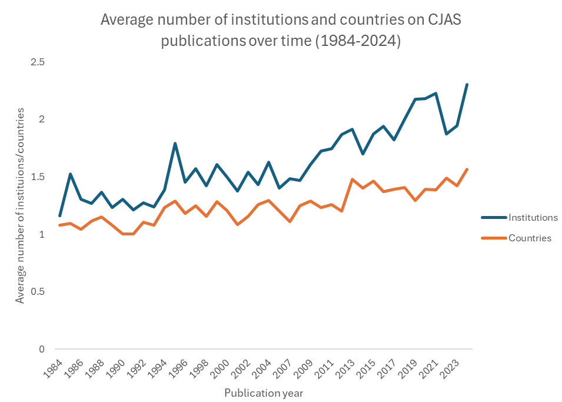
That’s it, now you know how approach the visualization of multiple variables at once to show the relationship between them. The section below contains a series of videos demonstrating how to construct the graphs that you have encountered in this chapter (and a few more).
Demo
11.4 Predicting a variable based on multiple other variables
11.4.1 Logistic regression
Regression is a method used to determine the relationship between a dependent variable (the variable we want to predict) and one or more independent variables (the predictors available to make the prediction). There are a wide variety of regression methods, but in this course we will learn two: the logistic regression, which is used to predict a categorical dependent variable, and the linear regression, which is used to predict a continuous dependent variable.
In this chapter, we focus on the binomial logistic regression (we will refer to it as logistic regression or simply regression in the rest of the chapter), which means that our dependent variable is dichotomous (e.g., yes or no, pass vs fail). Ordinal logistic regression (for ordinal dependent variables) and multinominal logistic regression (for variables with more than 2 categories) are beyond the scope of the course.
Logistic function
Logistic regression is called this way because it fits a logistic function (an s-shaped curve) to the data to model the relationship between the predictors and a categorical outcome. More specifically, it models the probability of an outcome (the dependent categorical variable) based on the value of the independent variable. Here’s an example:
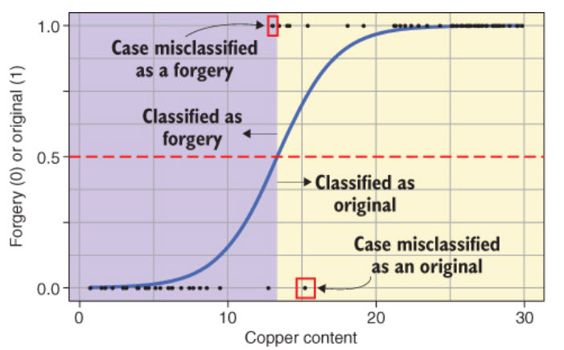
The model gives us, for each value of the independent variable (Copper content, in this example), the probability (odds) that the painting is an original. The point where the logistic curve reaches .5 (50%) on the y-axis is where the cut-off happens: the model predicts that any painting with a copper content above that point is an original.
Odds
We can convert probabilities into odds by dividing the probability p of the one outcome by the probability of the other outcome, so because there are only two outcomes, then odds = p / 1-p. For example, say we have a bag of 10 balls, 2 red and 8 black. If we draw a ball at random, we have a 8/10 = 80% chance of drawing a black ball. The odds of drawing a black ball are thus 0.8/(1-0.8) = 0.8/0.2 = 4. There is a 4 to 1 chance that we’ll draw a black ball over a red one.
However, the output of the logistic regression model is the natural logarithm of the odds: log odds = ln(p/1-p), so it is not so easily interpreted.
Logistic regression example
Here we will use the Titanic passenger dataset.
| pclass | survived | name | sex | age | age group | ticket | fare | cabin | embarked |
|---|---|---|---|---|---|---|---|---|---|
| 1 | 1 | Allen, Miss. Elisabeth Walton | female | 29 | 18 to 35 | 24160 | 211.3375 | B5 | Southampton |
| 1 | 1 | Allison, Master. Hudson Trevor | male | 1 | 0 to 17 | 113781 | 151.5500 | C22 C26 | Southampton |
| 1 | 0 | Allison, Miss. Helen Loraine | female | 2 | 0 to 17 | 113781 | 151.5500 | C22 C26 | Southampton |
| 1 | 0 | Allison, Mr. Hudson Joshua Creighton | male | 30 | 18 to 35 | 113781 | 151.5500 | C22 C26 | Southampton |
| 1 | 0 | Allison, Mrs. Hudson J C (Bessie Waldo Daniels) | female | 25 | 18 to 35 | 113781 | 151.5500 | C22 C26 | Southampton |
| 1 | 1 | Anderson, Mr. Harry | male | 48 | 36 to 59 | 19952 | 26.5500 | E12 | Southampton |
Choose a set of predictors (independent variables)
Looking at our dataset, we can identify some variables that we think might affect the probability that a passenger survived. In our model, we will choose Sex, Age, Pclass, and Fare.. We can now remove the variables that we don’t need in our model by selecting the ones we want to keep.
| survived | sex | age | fare | pclass |
|---|---|---|---|---|
| 1 | female | 29 | 211.3375 | 1 |
| 1 | male | 1 | 151.5500 | 1 |
| 0 | female | 2 | 151.5500 | 1 |
| 0 | male | 30 | 151.5500 | 1 |
| 0 | female | 25 | 151.5500 | 1 |
| 1 | male | 48 | 26.5500 | 1 |
Dealing with missing data
We can count the number of empty cells for each variable to see if some data is missing. We do this for each variable in the set.
| variable | missing_values |
|---|---|
| survived | 0 |
| sex | 0 |
| age | 263 |
| fare | 1 |
| pclass | 0 |
Once we have identified that some columns contain missing data, we have two choices. We do nothing and these cases will be left out of the regression model, or we fill the empty cells in some way (this is called imputation). We have many missing values (177 out of 891 observations is quite large) and leaving out these observations could negatively affect the performance of our regression model. Therefore, we will assign the average age for all 177 missing age values, which is a typical imputation mechanism to replace missing values with an estimate based on the available data.
| survived | sex | age | fare | pclass |
|---|---|---|---|---|
| 1 | female | 29 | 211.3375 | 1 |
| 1 | male | 1 | 151.5500 | 1 |
| 0 | female | 2 | 151.5500 | 1 |
| 0 | male | 30 | 151.5500 | 1 |
| 0 | female | 25 | 151.5500 | 1 |
| 1 | male | 48 | 26.5500 | 1 |
Visualizing the relationships
To explore the relationship between variables. we can visualize the distribution of independent variable values for each value of the dependent variable. We can use box plots for continuous independent variables and bar charts for the categorical variables.
| survived | Variable | Value |
|---|---|---|
| 1 | sex | female |
| 1 | sex | male |
| 0 | sex | female |
| 0 | sex | male |
| 0 | sex | female |
| 1 | sex | male |
Let’s create box plots for all our independent variables and outcome.
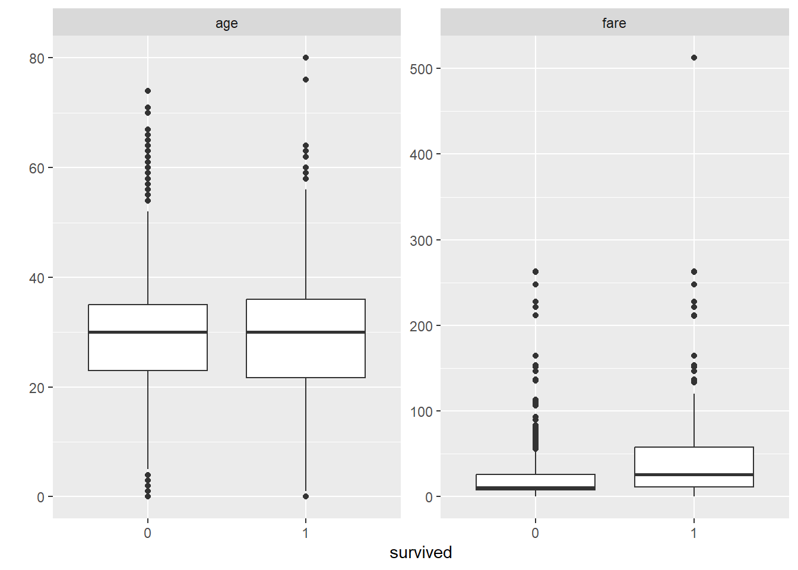
And let’s make bar charts for our categorical independent variables.
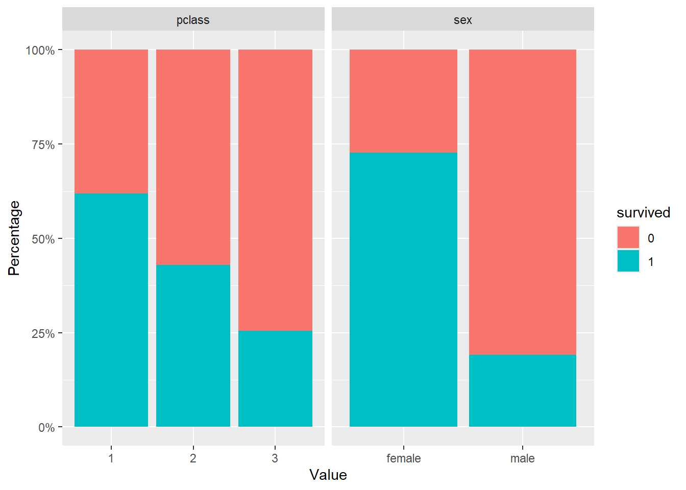
Creating the model
The following code generates our logistic regression model using the glm() function (glm stands for general linear model). The syntax is gml(predicted variable ~ predictor1 + predictor2 + preductor3..., data, family) where data is our dataset and the family is the type of regression model we want to create. In our case, the family is binomial.
Model summary
Now that we have created our model, we can look at the coefficients (estimates) which tell us about the relationship between our predictors and the predicted variable. The Pr(>|z|) column represents the p-value, which determines whether the effect observed is statistically significant. It is common to use 0.05 as the threshold for statistical significance, so all the effects in our model are statistically significant (p < 0.05) except for the fare (p > 0.05).
| Estimate | Std. Error | z value | Pr(>|z|) | |
|---|---|---|---|---|
| (Intercept) | 4.2805940 | 0.4116103 | 10.3996285 | 0.0000000 |
| sexmale | -2.4893690 | 0.1497232 | -16.6264796 | 0.0000000 |
| age | -0.0319317 | 0.0060478 | -5.2798944 | 0.0000001 |
| fare | 0.0007146 | 0.0016281 | 0.4389321 | 0.6607108 |
| pclass | -1.0410960 | 0.1097710 | -9.4842577 | 0.0000000 |
Converting log odds to odds ratio
As we mentioned above, the coefficients produced by the model are log odds, which are difficult to interpret. We can convert them to odds ratio, which are easier to interpret. We can now see that according to our model, female passengers were 12 times more likely to survive than male passengers.
| (Intercept) | sexmale | age | fare | pclass |
|---|---|---|---|---|
| 72.28337 | 0.0829623 | 0.9685727 | 1.000715 | 0.3530675 |
Adding confidence intervals
The confidence intervals are an estimation of the precision odds ratio. In the example below, We use a 95% confidence interval which means that we are 95% of our estimated coefficients for a predictor are between the 2.5th percentile and the 97.5th percentile (the two values reported in the tables). If we were using a sample to make claims about a population, which does not really apply here due to the unique case of the titanic, we could then think of the confidence interval as indicating a 95% probability that the true coefficient for the entire population is situated in between the two values.
| odds_ratio | 2.5 % | 97.5 % | |
|---|---|---|---|
| (Intercept) | 72.2833656 | 32.6163916 | 164.0005638 |
| sexmale | 0.0829623 | 0.0615772 | 0.1107899 |
| age | 0.9685727 | 0.9570331 | 0.9800127 |
| fare | 1.0007149 | 0.9975736 | 1.0040235 |
| pclass | 0.3530675 | 0.2840577 | 0.4369938 |
Model predictions
First we add to our data the probability that the passenger survived as calculated by the model.
| survived | sex | age | fare | pclass | probability |
|---|---|---|---|---|---|
| 1 | female | 29 | 211.3375 | 1 | 0.9216158 |
| 1 | male | 1 | 151.5500 | 1 | 0.6956141 |
| 0 | female | 2 | 151.5500 | 1 | 0.9638736 |
| 0 | male | 30 | 151.5500 | 1 | 0.4751405 |
| 0 | female | 25 | 151.5500 | 1 | 0.9275404 |
| 1 | male | 48 | 26.5500 | 1 | 0.3178611 |
Then we obtain the prediction by creating a new variable called prediction and setting the value to 1 if the calculated probability of survival is greater than 50% and 0 otherwise.
| survived | sex | age | fare | pclass | probability | prediction |
|---|---|---|---|---|---|---|
| 1 | female | 29 | 211.3375 | 1 | 0.9216158 | 1 |
| 1 | male | 1 | 151.5500 | 1 | 0.6956141 | 1 |
| 0 | female | 2 | 151.5500 | 1 | 0.9638736 | 1 |
| 0 | male | 30 | 151.5500 | 1 | 0.4751405 | 0 |
| 0 | female | 25 | 151.5500 | 1 | 0.9275404 | 1 |
| 1 | male | 48 | 26.5500 | 1 | 0.3178611 | 0 |
Then we can print a table comparing the model’s prediction to the real data.
predicted
survived 0 1
0 680 128
1 161 339Finally, we can calculate how well our model fits the data (how good was it at predicting the independent variable) by testing, for each passenger in the dataset, whether the prediction matched the actual outcome for that passenger. Because that test gives TRUE (1) or FALSE (0) for every row of the dataset, calculating the mean of the test results gives us the percentage of correct predictions, which in our case is about 78%.
11.4.2 Linear regression
Linear regression uses a straight line to model the relationship between categorical or numerical predictors (independent variables) and a numerical predicted value (dependent variable). for a single predictor variable, the formula for the prediction is:
\[ y = intercept + slope × x \]
In statistical terms, the same formula is written like this:
\[ y = β_0 + βx \]
And if we have multiple independent variables, the formula becomes:
\[ y = β_0 + β_1x_1 + β_2x_2 .... β_nx_n \]
To determine how well the model fits the data (how well does x predict y. the linear model uses the square of the residuals (r2). The residuals are the difference between the predicted values and the real data, measured by the vertical distance between the line and the data points. Here’s a figure from Rhys (2020) to help you visualize this.
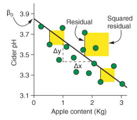
We can see in this figure that the intercept is where the line crosses the y-axis. The slope is calculated by dividing the difference in the predicted value of y by the difference in the value of x.
When working with categorical predictors, the intercept is the mean value of the base category, and the slope is the difference between the means of each category. Here’s an example taken again from Rhys (2020).
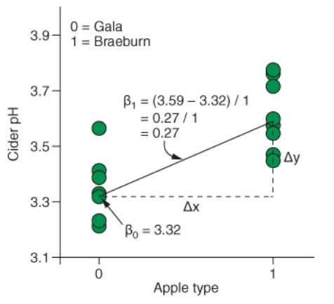
Building a linear regression model
Let’s use on-time data for all flights that departed NYC (i.e. JFK, LGA or EWR) in 2013 to try to build a model that will predicted delayed arrival. For this we will use the flights dataset included in the nycflights13 package. We will consider the following variables in our model:
origin: airport of departure (JFK, LGA, EWR)
carrier (we will only compare United Airlines - UA, and American Airlines - AA)
distance: flight distance in miles.
dep_delay: delay of departure in minutes
arr_delay: delay of arrival in minutes (this is our independent variable)
| origin | carrier | distance | dep_delay | arr_delay |
|---|---|---|---|---|
| EWR | UA | 1400 | 2 | 11 |
| LGA | UA | 1416 | 4 | 20 |
| JFK | AA | 1089 | 2 | 33 |
| EWR | UA | 719 | -4 | 12 |
| LGA | AA | 733 | -2 | 8 |
| JFK | UA | 2475 | -2 | 7 |
Visualizing the relationship between the variables
We can explore the relationship between our independent variables and our independent variable. How we will approach this depends on the type of independent variables we have.
Continuous independent variables
For continuous independent variables, we do scatter plots with a fitted regression line. We can see in the plot below that there appears to be a linear relationship between the delay at departure and the delay at arrival (which is of course not so surprising). We can display the slope and the coefficient of determination (R2) of the regression line.
The coefficient of determination (R2)
The coefficient of determination should not be mistaken for the square of residuals, even thought they have the same notation (R2). The coefficient of determination tells us how well the regression line fits the data. It’s value ranges from 0 to 1. An R2 of 0 means that the linear regression model doesn’t predict your dependent variable any better than just using the average, and a value of 1 indicates that the model perfectly predicts the exact value of the dependent variable.
Another way to interpret the coefficient of determination is to consider it as a measure of the variation in the dependent variable is explained (or determined) by the model. For instance, a R2 of 0.80 indicates that 80% of the variation in the dependent variable is explained by the model.
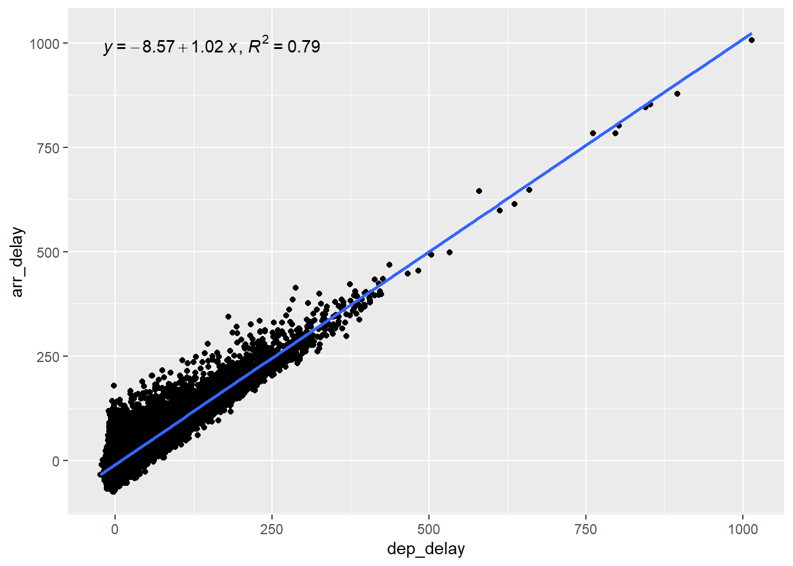
We can see that the the linear regression model using considering only the departure delay explains 79% of the variation in the arrival delay. That makes dep_delay a good predictor in our model. On the other hand, the flight distance explains less then 1% of the arrival delays, as we can see in the next graph. This makes distance a very weak predictor of arrival delays.
Distance
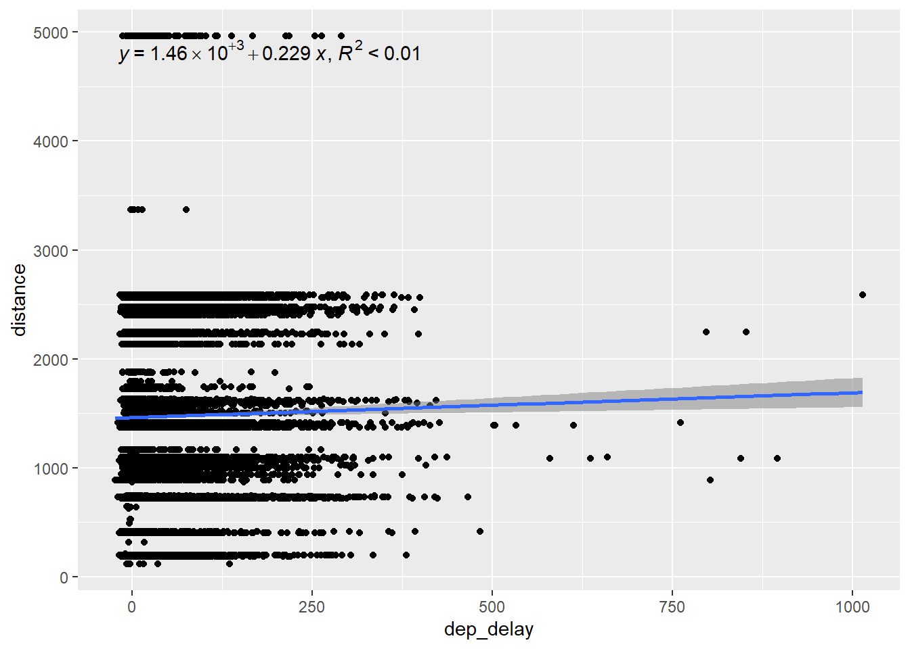
Categorical independent variables
To test the linear relationship between a categorical independent variable and the dependent variable, we can use a similar approach: a scatterplot with a linear regression line. However, to do this we need to transform the categorical variable into a numeric variable (in the graph, you will see the airports represented by a number). Also, When dealing with factors variables with more than two categories (factors with more than 2 levels), we need to choose a base level to which we will compare each of the other levels. In other words, all our graphs should display only two categories.
Carrier
The plot below shows that there is hardly any relationship between the carrier and the arrival delay, with the variable explaining less than 1% of the variation in arrival delays.
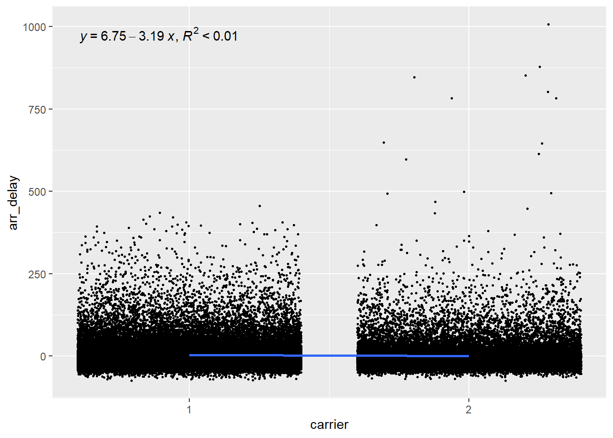
Origin
Since origin has three levels (EWR, LGA and JFK), we want to plot choose a base level and compare each other level to this one. So let’s choose level 1 (EWR) as our base and compare it with level 2 (LGA).
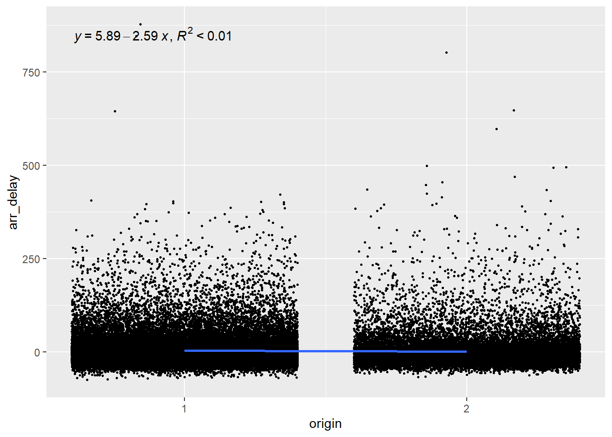
And then we compare airport 1 (EWR) with aiport 3 (JFK).
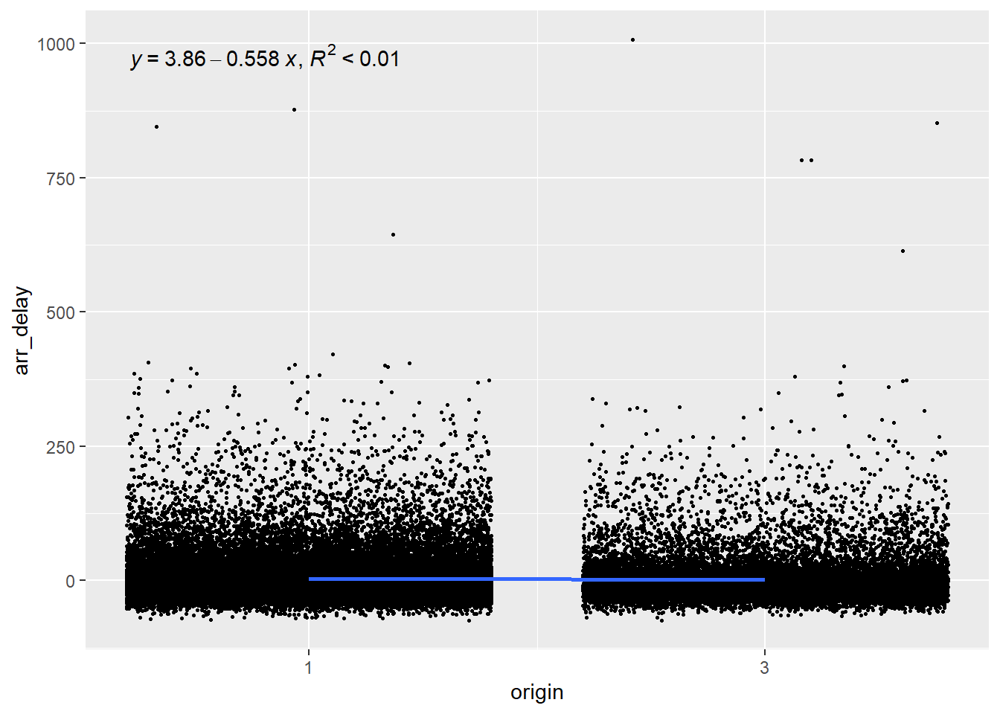
Again, we can see that the airport from which the flight takes off explains less than 1% of the arrival delays and is therefore a poor predictor.
Building the multiple linear regression model
The process to build the model is the same as the one we used for the logistic regression in the previous chapter. In fact, the process is simpler here because we do not need to convert the coefficient into odds ratios to make them easier to interpret. We can build the model that predicts delay at arrival based on the distance of the flight, the carrier and the origin (we’ll leave the delay of departure out of the model for now).
| Estimate | Std. Error | t value | Pr(>|t|) | |
|---|---|---|---|---|
| (Intercept) | 4.6299672 | 0.3577348 | 12.942455 | 0.0000000 |
| distance | -0.0007208 | 0.0002005 | -3.595645 | 0.0003238 |
| carrierAA | -3.6699113 | 0.3907133 | -9.392849 | 0.0000000 |
| originLGA | -0.7238011 | 0.4052653 | -1.785993 | 0.0741037 |
| originJFK | 1.6725192 | 0.4638028 | 3.606100 | 0.0003110 |
| r.squared | adj.r.squared |
|---|---|
| 0.0017078 | 0.0016633 |
The estimate coefficient represents the slope of the linear trend line for each predictor, so we can plug these values into our linear equation.
\[ ArrDelay = 4.63 - 0.00distance - 3.67AA - 0.72LGA + 1.67JFK \]
We can see that most coefficients are statistically significant, which appears to indicate that they are good predictors, but let’s hold on for a minute before drawing too hasty conclusions. Look at the Adjusted R-squared (r2). It has a value of 0.001663, which is extremely small and indicate that the model explains less than 1% of the variance in delays. In other words, our model does not at all allow us to make predictions about delays. How can almost all predictors in a model be statistically significant and still be very bad predictors?
Beware of too large sample
Statistically significant predictors in a model with low predictive value mostly occur when our data set or sample is too large. What’s a good sample size? a good rule of thumb is 10% of the total observations, with at least ten observations per variable in the model but no more than 1000 observations in total. Let’s do this again with a sample of 500 observations. We can use the create a sample of a specific size that will be used in the lm() function.
| Estimate | Std. Error | t value | Pr(>|t|) | |
|---|---|---|---|---|
| (Intercept) | 1.7864104 | 4.825768 | 0.3701816 | 0.7114056 |
| distance | 0.0010263 | 0.002696 | 0.3806790 | 0.7036047 |
| carrierAA | -11.7890174 | 5.456539 | -2.1605301 | 0.0312108 |
| originLGA | 8.7171575 | 5.586179 | 1.5604865 | 0.1192840 |
| originJFK | 12.4601593 | 6.401921 | 1.9463157 | 0.0521823 |
| r.squared | adj.r.squared |
|---|---|
| 0.0121575 | 0.0041749 |
We see that the model still does a terrible job at predicting arrival delays, and that none of the predictors are statistically significant (at the p < 0.05 level).
Adding departure delay to the model
Finally, let’s add the departure delay to the model. We’ve seen in the figure above, in which we plotted the arrival delay against the departure delay, that our data points seemed to follow our trend line, so we can expect that adding this predictor will improve our model.
| Estimate | Std. Error | t value | Pr(>|t|) | |
|---|---|---|---|---|
| (Intercept) | -6.3578887 | 2.2143259 | -2.871253 | 0.0042641 |
| distance | -0.0016663 | 0.0012631 | -1.319249 | 0.1876969 |
| carrierAA | -4.6325615 | 2.3377374 | -1.981643 | 0.0480731 |
| originLGA | 4.1617315 | 2.4576793 | 1.693358 | 0.0910177 |
| originJFK | 6.6899799 | 2.8138690 | 2.377502 | 0.0178100 |
| dep_delay | 1.0215813 | 0.0159641 | 63.992388 | 0.0000000 |
| r.squared | adj.r.squared |
|---|---|
| 0.8927765 | 0.8916913 |
We can see that when we consider the delay in the departure, we can more accurately predict the delay at arrival, with around 80% of the variance explained by our model!
11.5 References
Rhys, Hefin. 2020. Machine Learning with r, the Tidyverse, and Mlr. Shelter Island, NY: Manning publications.